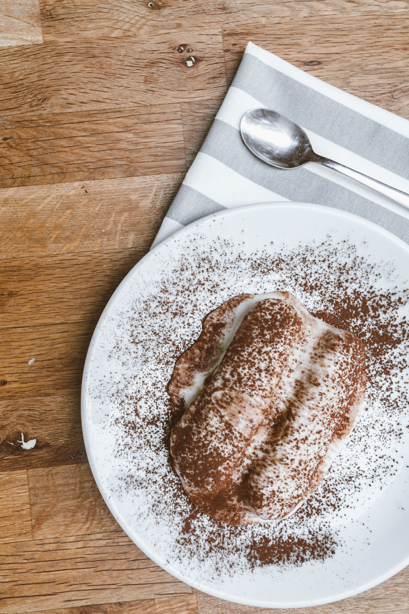

Tiramisu Recipe
Home

Tiramisu is a famous coffee-flavored Italian dessert made of ladyfingers dipped in coffee, layered with a whipped mixture of eggs, sugar, and mascarpone cheese, and flavored with cocoa.
It is a rich, creamy, and sophisticated treat that is served cold.
The name literally means "pick me up" due to its shot of espresso.
Ingredients
- 24 ladyfinger biscuits
- 1 cup of strong brewed espresso (cooled)
- 250g mascarpone cheese
- 2 eggs (separated into yolks and whites)
- 1/2 cup of granulated sugar
- 1 tablespoon of cocoa powder
- 1 teaspoon of vanilla extract
Steps
- Whisk the egg yolks and sugar together in a medium bowl until light and creamy.
- Add the mascarpone cheese and vanilla extract to the yolk mixture, mixing smoothly until no lumps remain.
- In a separate clean bowl, beat the egg whites until stiff peaks form, then gently fold them into the mascarpone cream.
- Dip each ladyfinger biscuit into the cooled espresso quickly so they do not get too soggy.
- Arrange a layer of the dipped ladyfingers tightly at the bottom of a small rectangular serving dish.
- Spread half of the mascarpone cream mixture evenly over the ladyfinger layer.
- Repeat with another layer of dipped ladyfingers and top it with the remaining cream mixture.
- Dust the top generously with cocoa powder, cover the dish, and refrigerate for at least 4 hours before serving.